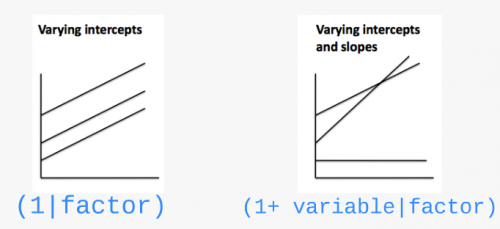
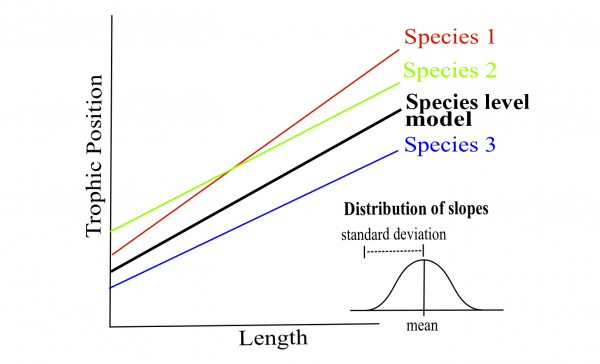

Chapter 10 Step 2. Code potential models and model selection
Translate this model…
\[TP_{ijk} \sim Length_i + Lake_j + Species_k + \epsilon_{ijk}\]
… into R code
## Linear mixed model fit by REML ['lmerMod']
## Formula: Z_TP ~ Z_Length + (1 | Lake) + (1 | Fish_Species)
## Data: fish.data
## REML criterion at convergence: 72.4662
## Random effects:
## Groups Name Std.Dev.
## Lake (Intercept) 0.4516
## Fish_Species (Intercept) 0.9301
## Residual 0.2605
## Number of obs: 180, groups: Lake, 6; Fish_Species, 3
## Fixed Effects:
## (Intercept) Z_Length
## 9.752e-14 4.198e-01Where:
lmer-> “linear mixed model” function fromlme4package(1 | Lake)-> indicate varying intercepts among lakesREML = TRUE-> estimation method
10.1 Estimation methods
REML (Restricted Maximum Likelihood) is the default method in lmer (see ?lmer).
The Maximum Likelihood (ML) method underestimate model variances by a factor of \((n-k)/n\), where \(k\) is the number of fixed effects. The REML method corrects for this bias.
REML estimates can be used when comparing models with the same fixed effects (i.e. nested models). However, if you are comparing models where the fixed effects differ among models then maximum likelihood should be used to fit parameters as this method is not dependent on the coefficients of the fixed effects. Fitting using maximum likelihood is done by setting REML=FALSE in the lmer command.
See this article for more information on the difference between ML and REML.
In summary:
REML to compare models with nested random effects and the same fixed effect structure
ML to compare models with nested fixed effects and the same random effect structure
ML to compare models with and without random effects
10.2 Different model structures
What if we want the slopes to vary?

Let’s look at different model structures:
(1 | Lake)random effect by lake at the intrecept(1 + Z_Length | Lake)random effect by lake at the intercept and slope in response to the body length (NB: (Z_Length | Lake)gives the same random structure)(-1 + Z_Length | Lake)to have only the random effect at the slope(1 | Lake) + (1 | Species)for crossed random effects(1 | Lake:Fish_Species)for the interaction between 2 random effectsIf your dataset includes nested random effects, you could use
/to specify them, e.g.(1 | factor1 / factor2)iffactor2is nested infactor1(see stack-exchange)
10.3 Challenge 4
Re-write the following code so that the slopes of the relationship between trophic position and body length vary by lake and species:
# Challenge 4: Can you re-write this code so that the slopes
# between trophic position and body length vary by lake and
# species?
lmer(Z_TP ~ Z_Length + (1 | Lake) + (1 | Fish_Species), data = fish.data,
REML = TRUE)## Linear mixed model fit by REML ['lmerMod']
## Formula: Z_TP ~ Z_Length + (1 | Lake) + (1 | Fish_Species)
## Data: fish.data
## REML criterion at convergence: 72.4662
## Random effects:
## Groups Name Std.Dev.
## Lake (Intercept) 0.4516
## Fish_Species (Intercept) 0.9301
## Residual 0.2605
## Number of obs: 180, groups: Lake, 6; Fish_Species, 3
## Fixed Effects:
## (Intercept) Z_Length
## 9.752e-14 4.198e-01Challenge 4 Solution:
# Challenge 4 solution:
lmer(Z_TP ~ Z_Length + (1 + Z_Length | Lake) + (1 + Z_Length |
Fish_Species), data = fish.data, REML = TRUE)## boundary (singular) fit: see ?isSingular## Linear mixed model fit by REML ['lmerMod']
## Formula:
## Z_TP ~ Z_Length + (1 + Z_Length | Lake) + (1 + Z_Length | Fish_Species)
## Data: fish.data
## REML criterion at convergence: 20.5786
## Random effects:
## Groups Name Std.Dev. Corr
## Lake (Intercept) 0.45279
## Z_Length 0.02378 -0.82
## Fish_Species (Intercept) 0.93103
## Z_Length 0.15728 1.00
## Residual 0.22341
## Number of obs: 180, groups: Lake, 6; Fish_Species, 3
## Fixed Effects:
## (Intercept) Z_Length
## -0.0009025 0.4223738
## optimizer (nloptwrap) convergence code: 0 (OK) ; 0 optimizer warnings; 1 lme4 warnings10.4 Challenge 5
To determine if you have built the best mixed model based on your prior knowledge, you should compare this a priori model to other alternative models.
With the dataset you are working on, there are several alternative models that might better fit your data. For challenge 5, make a list of 7 alternative models that could be compared to this one:
# Challenge 5: Make a list of 7 alternative models that could
# be compared to this initial model:
lmer(Z_TP ~ Z_Length + (1 | Lake) + (1 | Fish_Species), data = fish.data,
REML = TRUE)## Linear mixed model fit by REML ['lmerMod']
## Formula: Z_TP ~ Z_Length + (1 | Lake) + (1 | Fish_Species)
## Data: fish.data
## REML criterion at convergence: 72.4662
## Random effects:
## Groups Name Std.Dev.
## Lake (Intercept) 0.4516
## Fish_Species (Intercept) 0.9301
## Residual 0.2605
## Number of obs: 180, groups: Lake, 6; Fish_Species, 3
## Fixed Effects:
## (Intercept) Z_Length
## 9.752e-14 4.198e-01Note: If we had different fixed effects between the models or a model without random effects, we would have to specify REML = FALSE to compare with likelihood methods like AIC.
Challenge 5 Solution:
We first will also build the basic linear model lm() because it is always useful to see the variation in the AICc values (we will discuss these in more detail in the next section).
In order to compare this model to the LMMs, it is important to change the estimation method to ML (REML=FALSE) for all other models because lm() does not use the same estimation method as lmer().
Let’s look at the other models you could have written (note REML = FALSE):
# Challenge 5 solution, other potential models Note that REML
# = FALSE in order to compare with the basic linear model
# where estimation method = ML
# Basic linear model / Linear model with no random effects
M0 <- lm(Z_TP ~ Z_Length, data = fish.data)
# Full model with varying intercepts
M1 <- lmer(Z_TP ~ Z_Length + (1 | Fish_Species) + (1 | Lake),
data = fish.data, REML = FALSE)
# Full model with varying intercepts and slopes
M2 <- lmer(Z_TP ~ Z_Length + (1 + Z_Length | Fish_Species) +
(1 + Z_Length | Lake), data = fish.data, REML = FALSE)## boundary (singular) fit: see ?isSingular# No Lake, varying intercepts only
M3 <- lmer(Z_TP ~ Z_Length + (1 | Fish_Species), data = fish.data,
REML = FALSE)
# No Species, varying intercepts only
M4 <- lmer(Z_TP ~ Z_Length + (1 | Lake), data = fish.data, REML = FALSE)
# No Lake, varying intercepts and slopes
M5 <- lmer(Z_TP ~ Z_Length + (1 + Z_Length | Fish_Species), data = fish.data,
REML = FALSE)## boundary (singular) fit: see ?isSingular# No Species, varying intercepts and slopes
M6 <- lmer(Z_TP ~ Z_Length + (1 + Z_Length | Lake), data = fish.data,
REML = FALSE)## boundary (singular) fit: see ?isSingular# Full model with varying intercepts and slopes only varying
# by lake
M7 <- lmer(Z_TP ~ Z_Length + (1 | Fish_Species) + (1 + Z_Length |
Lake), data = fish.data, REML = FALSE)## boundary (singular) fit: see ?isSingular# Full model with varying intercepts and slopes only varying
# by species
M8 <- lmer(Z_TP ~ Z_Length + (1 + Z_Length | Fish_Species) +
(1 | Lake), data = fish.data, REML = FALSE)## boundary (singular) fit: see ?isSingularWhen fitting LMMs with lmer(), you may encounter some errors or warnings such as:
boundary (singular) fit: see ?isSingular, see this discussion on stack-exchangeModel failed to converge with max|grad| ..., see this discussion on stack-exchange
Here a list of possible problems and how to troubleshoot them.
10.5 Comparing models
Now that we have a list of potential models, we want to compare them to each other to select the one(s) with the highest predictive power given the data.
Models can be compared by using the AICc function from theMuMIn package. The Akaike Information Criterion (AIC) is a measure of model quality that can be used to compare models.
AICc corrects for bias created by small sample sizes.
In order the find the AICc value of a model, use:
# Load MuMIn package which allows us to find AICc values for
# our models
library(MuMIn)
# Find AICc value for our first model (Basic linear model)
MuMIn::AICc(M1)## [1] 77.30499To group all AICc values into a single table, use MuMIn::model.sel() to calculate AICc for each model (along with other outputs) and then select only the columns of interest to print in a table.
# To group all AICc values into a single table, we can use
# MuMIn::model.sel() to calculate AICc for each model (along
# with other outputs)
AIC.table <- MuMIn::model.sel(M0, M1, M2, M3, M4, M5, M6, M7,
M8)
# Then we can select only the columns of interest to print
# into a table `df` is the degree of freedom `logLik` is the
# loglikelihood `delta` is the AICc difference with the
# lowest value
(AIC.table <- AIC.table[, c("df", "logLik", "AICc", "delta")])## df logLik AICc delta
## M8 7 -8.597929 31.84702 0.000000
## M2 9 -8.216019 35.49086 3.643839
## M1 5 -33.480080 77.30499 45.457965
## M7 7 -33.186374 81.02391 49.176890
## M5 6 -128.310995 269.10754 237.260517
## M3 4 -134.532965 277.29450 245.447480
## M4 4 -224.715763 457.66010 425.813076
## M6 6 -224.671201 461.82795 429.980930
## M0 3 -236.861362 479.85909 448.012065# For more information on the other outputs/results returned
# by the function `model.sel()`, see `?model.sel`.Where:
dfis the degree of freedomlogLikis the loglikelihooddeltais the AICc difference with the lowest value
We only displayed part of the results returned by the function model.sel(), see ?model.sel for more information.
What do these AICc values mean?
- The model with the smallest AICc has the highest predictive power.
- Some suggest that if models are within 2 AICc units of each other then they are equally plausible.
- Let’s take a closer look at M8 and M2. We can exclude other models because they have such higher AICc.
Note that we use now REML (i.e. REML = TRUE) as we are comparing two models with nested random effects and the same fixed effect structure.
# Let's take a closer look at M8 and M2. We can exclude other
# model because they have such higher AICc Because we are
# comparing two mixed effect models, we can set `REML = TRUE`
# when generating M8 and M2
M8 <- lmer(Z_TP ~ Z_Length + (1 + Z_Length | Fish_Species) +
(1 | Lake), data = fish.data, REML = TRUE)## boundary (singular) fit: see ?isSingularM2 <- lmer(Z_TP ~ Z_Length + (1 + Z_Length | Fish_Species) +
(1 + Z_Length | Lake), data = fish.data, REML = TRUE)## boundary (singular) fit: see ?isSingular# Now let's print a table in order to compare M2 and M8
MuMIn::model.sel(M2, M8)[, c("df", "logLik", "AICc", "delta")]## df logLik AICc delta
## M8 7 -10.84011 36.33137 0.000000
## M2 9 -10.28932 39.63747 3.306098Model M8 seems to be the best among all models that we tested.
What is the structure of the best model?
# Let's take a look at the best model again, what is it's
# structure?
M8 <- lmer(Z_TP ~ Z_Length + (1 + Z_Length | Fish_Species) +
(1 | Lake), data = fish.data, REML = FALSE)## boundary (singular) fit: see ?isSingular# Both the intercepts and slopes of the relationship between
# trophic position and length may vary by fish species, but
# only the intercepts may vary by lake.Both the intercepts and slopes of the relationship between trophic position and length may vary by fish species, but only the intercepts may vary by lake.


Once the best model is selected, the estimation method must be reset to REML = TRUE.
# Once the best model is selected, the estimation method must
# be reset to `REML = TRUE`.
M8 <- lmer(Z_TP ~ Z_Length + (1 + Z_Length | Fish_Species) +
(1 | Lake), data = fish.data, REML = TRUE)## boundary (singular) fit: see ?isSingular